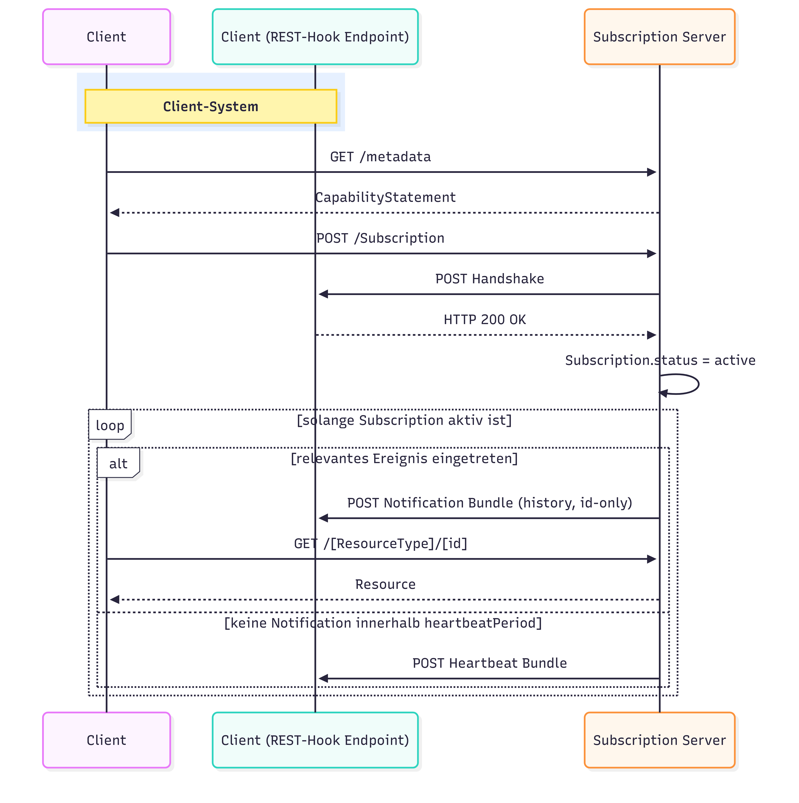

Seiteninhalt:
Es gelten die Interaktionen und der Workflow aus dem Subscription Backport IG.
Der Subscription-Workflow umfasst die folgenden verpflichtenden Schritte:
Clients sollen in der Lage sein, die vom Subscription Server unterstützten SubscriptionTopics abzufragen. Der Server MUSS die unterstützten Topics über die Extensioncapabilitystatement-subscriptiontopic-canonical
im CapabilityStatement bekannt geben.
GET [base]/metadata
{
"resourceType": "CapabilityStatement",
"rest": [
{
"mode": "server",
"resource": [
{
"type": "Subscription",
"extension": [
{
"url": "http://hl7.org/fhir/uv/subscriptions-backport/StructureDefinition/capabilitystatement-subscriptiontopic-canonical",
"valueCanonical": "https://gematik.de/fhir/isik/SubscriptionTopic/patient-merge"
},
...
],
...
}
],
...
}
]
}
Clients können eine Subscription auf dem Subscription Server anlegen. Der Subscription Server MUSS dabei die folgenden Angaben unterstützen:
Subscription.criteria): Canonical URL eines unterstützten SubscriptionTopics aus dem ISiKSubscriptionTopic CodeSystem.Subscription.criteria.extension:filterCriteria): Optionale Einschränkung der Ereignisse.Subscription.channel.type): MUSS rest-hook sein.Subscription.channel.payload.extension[content]): MUSS id-only sein. Die Notification enthält die ID der geänderten Ressource, aber keine vollständigen Ressourcendaten. Der Wert full-resource ist nicht zulässig.POST [base]/Subscription
Nach der Anlage MUSS der Server einen Handshake-Aufruf am angegebenen REST-Hook-Endpunkt durchführen.
Bei erfolgreicher Verarbeitung der Anfrage (HTTP 200 OK) MUSS der Subscription Server den Status der Subscription von requested auf active aktualisieren.
Tritt ein Fehler auf, MUSS der Subscription Server den Status auf error setzen.
Der Subscription Server KANN optional beim Handshake eine HTTP Basic Authentication mit einem statischen Secret (Subscription.channel.header) verwenden.
Der Subscription Server MUSS Benachrichtigungen als Bundle vom Typ history mit dem Entry entry:subscriptionStatus senden.
Der Subscription Server MUSS dabei payload=id-only verwenden, sodass die Benachrichtigung nur die ID(s) der geänderten Ressource(n), jedoch keine vollständigen Ressourcendaten enthält.
Anhand der übermittelten ID ruft der Client die aktuelle Version der Ressource über die reguläre FHIR-REST-API mit gültigem Autorisierungstoken ab (Pull-Prinzip).
Der Server MUSS einen Heartbeat senden, sobald die konfigurierte heartbeatPeriod seit der letzten erfolgreich zugestellten Benachrichtigung (Notification oder Heartbeat) abgelaufen ist und in diesem Zeitraum keine Notification erfolgt ist. Jede erfolgreiche Zustellung setzt den Zeitraum neu.
Der Subscription Server MUSS den Heartbeat als Bundle mit type=history und einem Entry SubscriptionStatus mit notificationType=heartbeat senden.
$status Operation (MUSS)Der Subscription Server MUSS die Operation $status unter [base]/Subscription/[id]/$status implementieren,
um Kanalzustand, letzte Events und Diagnosedaten zu prüfen.
GET [base]/Subscription/[id]/$status
$events Operation (MUSS)Der Server MUSS die Operation $events unter [base]/Subscription/[id]/$events unterstützen,
um verpasste Ereignisse nachzuliefern.
Die Filterparameter eventsSinceNumber und eventsUntilNumber MÜSSEN dabei unterstützt werden.
GET [base]/Subscription/[id]/$events?eventsSinceNumber=5&eventsUntilNumber=10
Bei einem nicht erreichbaren REST-Hook-Endpunkt MUSS der Server den SubscriptionStatus auf error
setzen. Der Client KANN per $status den Fehler prüfen und den Kanal reaktivieren.
Der dargestellte Workflow orientiert sich am Workflow des Subscription Backport Implementation Guide (R4) und fokussiert auf die für ISiK relevanten Aspekte und verpflichtenden Interaktionen.


id-only Payload in Notifications (MUSS): Benachrichtigungen enthalten die ID(s) der
geänderten Ressourcen, aber keine vollständigen FHIR Ressourcen. Clients rufen die Ressource nach
Erhalt der Notification gezielt per ID ab (Pull-Prinzip). Der Wert full-resource ist nicht
zulässig.
Keine Secrets in Subscription-Ressourcen: In Subscription.channel.header DÜRFEN keine
Klartext-Secrets dauerhaft gespeichert sein. Secrets sind bei Erstellung/Aktualisierung einmalig
übermittelbar (Write-Only). Bei READ-Interaktionen MUSS der Server den Header-Wert maskieren
(z.B. Authorization: Basic ****last5).
Da keine Payload in Notifications übertragen wird, ist die Authentifizierung des Empfängers optional.
Wenn genutzt, erfolgt sie über HTTP Basic Authentication mit einem statischen Secret in
Subscription.channel.header. Das Secret wird bei der Anlage einmalig angegeben und kann nicht
im Klartext ausgelesen werden.